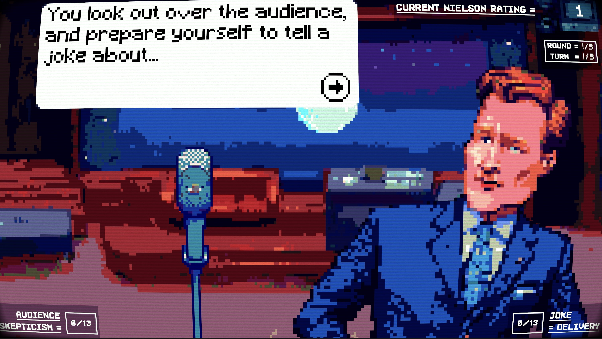

CONAN THROWBRIEN
Games
What is the half-life of a laugh track? At what frequency does collective indifference resonate when one million people simultaneously murmur "I don't really watch late night anymore"? Can one measure the exact wavelength of a comedian bombing at 1:37 AM on a Tuesday? If a punchline and setup exist eternally in quantum superposition, which one does the audience remember not laughing at?
CONAN THROWBRIEN emerged from the pursuit of these questions: a dice game of diminishing returns where you strive to avoid a cease and desist letter. The ear-shattering soundtrack is powered by the collective dreams of cancelled sitcom characters. Side effects include phantom rimshot syndrome and a 30-year career.
Press
- "Conan Throwbrien welcomes its host to the stage with discordant jazz and uncanny colour bars glitches. It feels eerie. Desperate. A crushing inevitability. Four joke topics appear at the bottom of the screen. Ridiculous celebrity kids names. Action figures for news anchors. Diet water sales boom. You cautiously slide that last one over to the microphone. Throwbrien emits a string of chirps, like a flame-crested lyre bird with a wounded voicebox trying to mimic human language."
- review by Nic Reuben of RockPaperShotgun
What I did
- Design, conceptualization, writing
- Unity, C#, Aesprite, Photoshop
- Music and sound effects in Logic Pro X
Nitty Gritty
- Year: 2024
- Material: custom code, Unity game engine